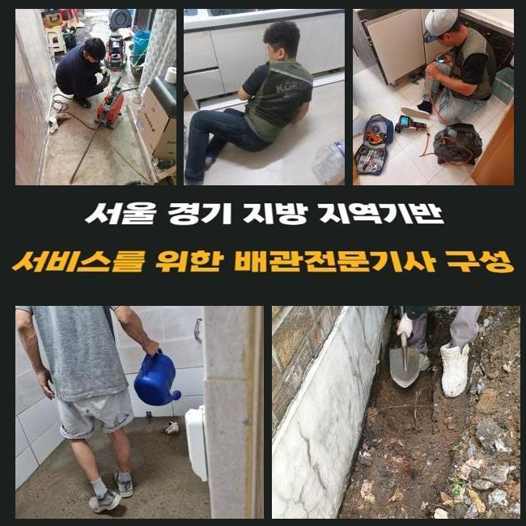
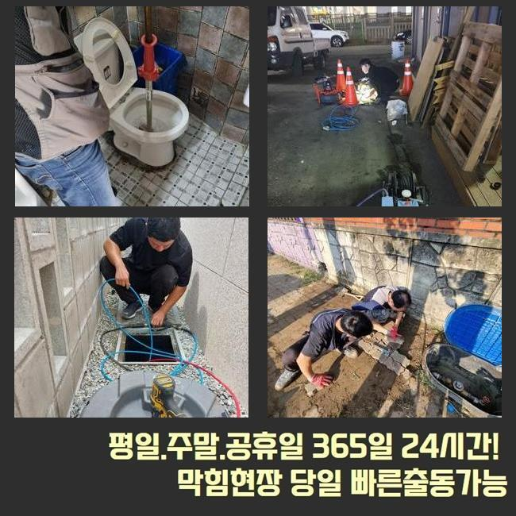
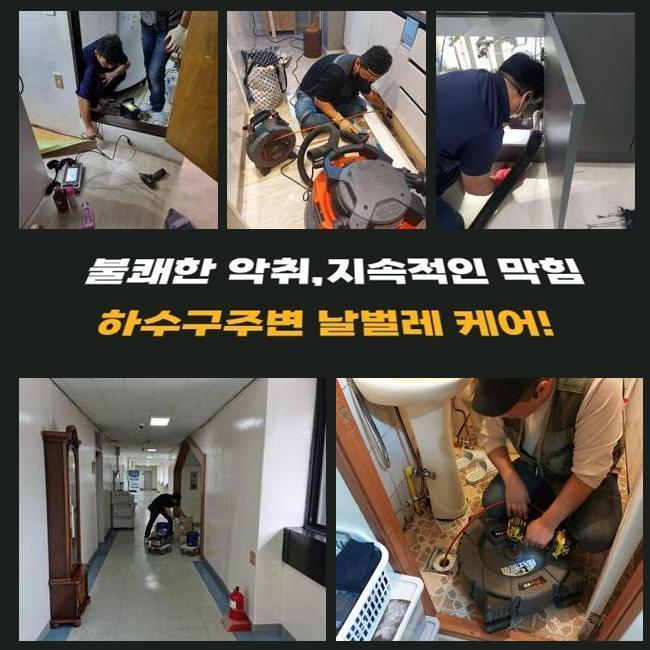
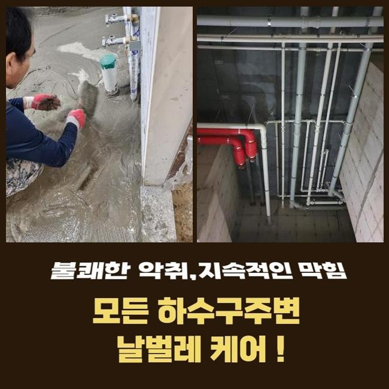
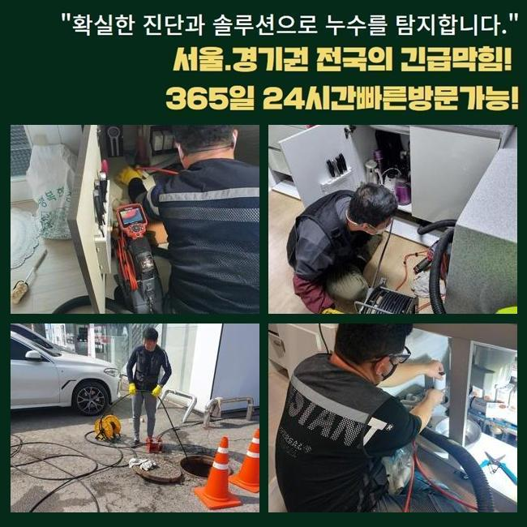
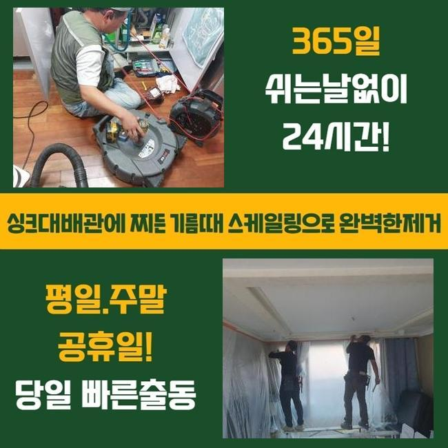

🏠 남동구 서창동화장실하수구역류 서창2동 악취차단 부속수리
인천 남동구 싱크대막힘 전문 시공 후기

📋 작업 개요
- 위치: 인천 남동구, 남동구, 인천
- 서비스 유형: 싱크대막힘, 하수구막힘, 배관막힘, 역류해결, 배관청소, 고압세척, 악취차단
- 작업 일시: 2024. 6. 6. 17:09
- 업체명: 하수구수사대 (010-5615-2118)
🔍 문제 상황
남동구 구월동세탁기배수구막힘 논현동 하수구청소 설비
물이 안빠지는 문제들을 바로 잡기위해서 실시되어야 하는건 하수라인의 때에 맞춘 조속한 처리가겠습니다
내부라인으로 이물들이 마구잡이로 흐를 수 없도록 유의하며 해당 과정에 노력하는게 중요하겠습니다
아파트 등의 인테리어 작업들을 할 때도 하수라인들을 진단해보고 결함을 수습하는게 중요한데요
고객분의 설명과 함께 싱크대쪽에서 발발한 기름성분으로 막힘 오류들을 시정하기위하여 작업들을 시작했죠
조리가 끝나고 기름들이 흘러가 하수관의 내부에도 자리를 잡게되어 단단해지면서 통수불가가 나타난 상황이었습니다
저희의 경우 석션장치로 초입부분의 오수들을 흡입하고 흡착물들도 제거시키고자 샤프트기기를 운용시켜 배수구를 세척했어요
이것으로 잔재들과 냄새등의 불편을 해소했는데요
씽크볼 안에 오수들과 잔해들을 없애주고 배수통에서부터 이어진 호스라인과 아래쪽을 점검했으나 이상은 없는 상태였습니다
그 후로 깊숙한 지점까지 관찰하고자 내시경장치를 운용했는데요

🔎 원인 분석
💡 전문가 진단: 정밀 진단 장비를 사용하여 슬러지의 고착 여부를 판명하고 타격/세척 작업을 실시했습니다.
내시경으로 체크해보니 초입부분엔 이상징후가 존재하지않았지만 1m 아래 벽면라인에 기름성분이 확인되었죠
꾸준히 점검하였더니 꺾이는 라인에서 하단부를 막고 있는 슬러지들을 보았죠
해당 잔해들이 공간들을 좁히는 바람에 문제들이 나타난 것으로 생각되었죠
그 후로 이물의 양상에 따른 해결법들을 모색해야했죠
잔해가 고착화를 거쳐 바닥부근을 막는 문제에서는 샤프트장치를 운용시켜 슬러지들을 파쇄하고 청소해주었어요
덧붙여 4미터 부분에서는 사슬의 회전력을 가용하여 기름때들을 조각내어 청소해주었어요
일반적으로 판매 중인 제품과 같이 단순히 풀어내는 것으론 효과가 미비할 수 밖에 없으므로 전문적인 장치가 요구되는 해당 과정을 수행함으로써 원활히 진행되었고 심층부까지 깨끗하게 정비해주었어요
이처럼 관로의 빠른 흐름이 되살아나 배관의 기능적인 이점들을 지켜냈습니다
업소 안의 해당 증상을 얼추 수습하고 바깥부분도 체크해보았죠
외부라인의 하수도도 대량의 잔해가 쌓인 상태였기에 작업이 쉽지만은 않겠다 생각했어요

🔧 작업 과정
물호스를 연결하여 하수구들을 흡입하고 잔여물들을 석션기로 배출시켰어요
내시경카메라로 관로 속을 관찰하니 이물질들의 누적이 이미 진행되었죠
이와 같은 문제의 경우 집수시설로 나아가는 배출을 불가하게 만드므로 각 라인의 훼손 이슈를 앞당기게 되는데요
배수로에 물이 새는 등의 증상이 발생된다거나 가지배관들이 손상된다라면 교체도 고려해야합니다
고객님에게 석션과 같은 장치보다는 고수압의 기계의 이용을 추천하였고 이전과의 차이와 수리의 방향성까지 설명드렸죠
고객분도 각 구간의 오염도를 가볍지 않게 받아들이시고는 고압노즐 분사로 실시하기를 희망하셔서 고압분사를 이어나가기로 하였습니다
외부 라인들을 청소하여 이물질을 청소해주는게 1순위였어요
물빠짐이 느려진것은 하수관로에 문제들이 있을 수 있으므로 점검들이 필요하겠습니다
시공 중간에 야기된 잔해물은 제거가 필요하고 잔여물질이 안쪽으로 빠지지않게끔 유의하셔야합니다
곧장 고압노즐을 써서 굳게된 잔해물질들과 슬러지들을 제거했는데요
심각성이 두드러졌던 문제였던 까닭에 만만치않은 절차라고 예측했으나 의외로 원활히 진행되어 작업시간들을 줄였는데요
고수압의 방식을 완료시키고 확인절차를 위한 내시경카메라로 안쪽에 잔존 잔여물질이 있는지 체크도 깨끗히 진행했죠
이러한 문제들을 예방할 목적이라면 간헐적이라도 점검을 실시 해야하겠습니다
앞으로를 생각해서라도 관리해주시는것에 덧붙여 신경 써야 합니다
해당 사안들을 준수하면 오래도록 하수도의 기능들을 지켜내는 것이 가능합니다
뒤이어 샤프트도구를 쓰고서 배출된 이물질로부터 위생적이지 못했던 부분들도 정리를하여 마무리까지 해주었는데요


✅ 작업 완료
배관들이 막힌 상황들 속에서 자가적으로 시정하기위하여 해결방법과 관련해 찾아보시는 방안도 도움이 될 수 있어요
그렇지만 현 사례의 증세와 같이 식당 등에서 혼자의 힘으로도 개선이 보이지 않는다면 전문인들에게 의뢰하는걸 고려하는 것이 좋아요
배수 정체는 해당 시기에 대응을 실시하지 않을 때엔 걷잡을 수 없는 증세도 불거지게 하죠
이후에 안정성있고 효과좋은 대응이 필요해요
통수상태에 문제가 생기면 아무때나 상담해보세요! 조속한 작업으로 의뢰인의 불편들을 해소하겠습니다




⚠️ 주방 싱크대 배관 막힘 예방 수칙
- ✅ 기름기가 묻은 식기나 프라이팬은 설거지 전 키친타올로 반드시 기름때를 닦아내세요.
- ✅ 주기적으로 싱크대 개수대에 뜨거운 물을 가득 받아 한 번에 내려 배관 내부 기름을 씻어내세요.
- ✅ 배수구 거름망을 미세한 필터로 사용하시고 음식물 찌꺼기가 틈으로 새어 들지 않게 관리하세요.
- ✅ 베이킹소다와 식초를 뜨거운 물과 함께 일주일에 한 번씩 부어주면 배관 살균과 막힘 예방에 좋습니다.
💡 핵심 정리
- 확실한 장비 작업(내시경 점검 및 샤프트 스케일링)으로 원인을 뿌리 뽑습니다.
- 작업 후 1년 이내에 동일한 부위 재발 시 100% 무상 A/S 서비스를 보장합니다.
- 서울 · 경기 · 인천 전 지역에 24시간 언제든 긴급 출동할 수 있도록 항시 대기 중입니다.
❓ 자주 묻는 질문 (FAQ)
🚨 인천 남동구 싱크대막힘 문제로 고민이신가요?
정확한 원인 진단과 확실한 시공으로 재발 없는 해결을 약속드립니다.
24시간 긴급 출동 | 서울 · 경기 · 인천 전지역 | 1년 내 재발 시 무상 A/S